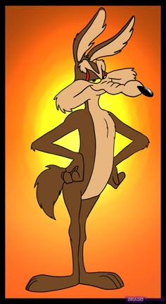

coiote é um animal mamífero carnívoro da família dos canídeos, nativo da América do Norte Central. Seu porte é médio, ele é um animal conhecido pela sua inteligência, é um predador oportunista que vocaliza através de uivos e latidos agudos.
Coyote é o famoso animal mudo da Warner Bros. Ele vive no deserto tentando capturar o Papa-Léguas usando planos absurdos e produtos defeituosos da marca ACME. Devido ao azar e à física dos desenhos, todas as armadilhas falham, e ele sempre acaba explodido ou caindo de penhascos.

Fora o coiote de Looney Tunes, o Coiote expandiu sua carreira em outras animações da Warner Bros. Nos anos 90, ele virou reitor e professor de armadilhas na série Tiny Toon Adventures, servindo de mentor para o jovem Calamity Coyote. Ele também fez aparições rápidas em Animaniacs e chegou a parodiar o monstro do filme Predador na ficção científica espacial Duck Dodgers.Nas telas de cinema, o personagem virou atleta nos filmes da franquia Space Jam, usando suas clássicas dinamites em quadra. Já no longa Coyote vs. Acme, ele vira o protagonista de uma batalha jurídica, processando a multinacional nos tribunais pelas constantes falhas de seus produtos. Existe também o lobo Ralph Wolf, que possui o design idêntico ao do Coiote, mas trabalha roubando ovelhas e batendo cartão de ponto em um desenho próprio.